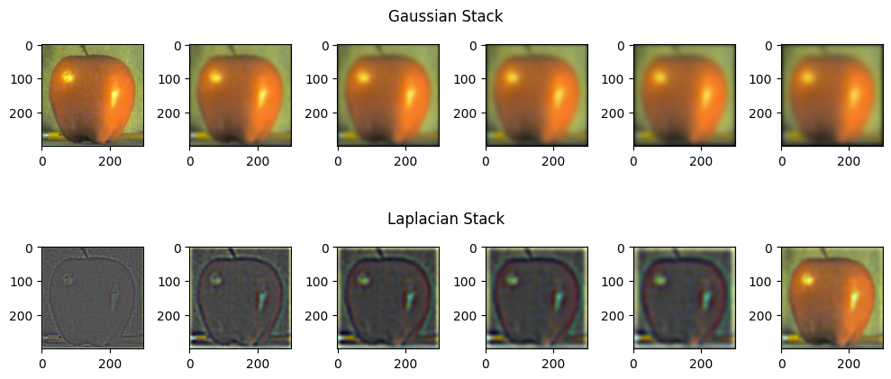

Fun with Filters and Frequencies
Part 1.1
I convolved the cameraman image with the finite difference operators to get the partial x and y derivatives of the image.
Dx Image

Dy Image
I then computed the gradient magnitude image, by taking the square root of the summed squares of the two partial derivaties. I found a threshold of 0.19 to be best when binarizing the gradient magnitude, striking a good balance of showing the outline of the man while reducing noise.
Gradient Magnitude Image
Binarized Graident Magnitude
Part 1.2
I blurred the cameraman image by convolving it with a 2D Gaussian kernel.

Orignal
Blurred
The image on the right is more blurred than the original. It is not extremely blurry because I used a small kernel with a small sigma value (<10).
Below are the results of the derivatives and gradient magnitude images with the new, smoothed cameraman image.
Smoothed Dx
Smoothed Dy
Smoothed Gradient Magnitude
Smoothed Binarized Graident Magnitude
Part 2.1: Image "Sharpening"
In order to sharpen the Taj Mahal image, I isolated the higher frequencies by subtracting the original image and a blurred, low-frequency version of the image (created by convolving with a Gaussian kernel). I added different amounts of the high frequencies back to the original image to produce different levels of "sharpness"

Original
α = 1
α = 2
α = 5
α = 10
Although not gaining any data, the images appear sharper because of the added high frequencies.
More Examples
Original
α = 1
α = 2
α = 5
α = 10
Resharpening a Blurred Image
The image was blurred in the same way described previously, by convolving with a Gaussian kernel. When we added higher frequencies back to the image, it provides some "resharpening", which you can see in the petals of the succulent.
Original
Blurred
Resharpened (α = 3)
Part 2.2: Hybrid Images
These hybrid images were created by adding the low frequencies of one image to the high frequencies of another. From close by, one should be able to perceive the image as the high-frequency object, and from far away, it should appear as the low frequency object.
Instructor-provided code was also used to align the images based on 2 points before combining them.

Low Frequency Image

High Frequency Image
Hybrid
Frequency Analysis
Below are the log magnitudes of the Fourier transforms of the two input images, the filtered images, and finally the new hybrid image.
Derek
Nutmeg
Derek (Low Frequency)
Nutmeg (High Frequency)
Hybrid
More Examples

Low Frequency Image
High Frequency Image
Hybrid
Failure

Low Frequency Image

High Frequency Image
Hybrid
This combination of images failed, I think because the pizza was too detailed of an image with widely contrasting colors. Although you can see the flower structure from far away, the detail in the pizza's cheese still sticks out, and so the "illusion" doesn't hold as well.
Part 2.3: Gaussian/Laplacian Stacks
Apple
Orange
Part 2.4: Multiresolution Blending

Apple

Orange
Mask

Young
Old
Mask
Washington
Googly Eyes

Mask